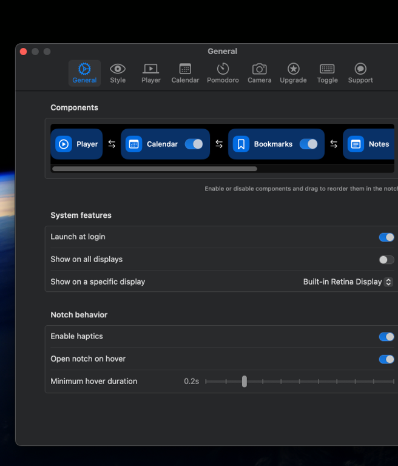

NotchNest
The best mac notch app — turn your MacBook's notch into a quick-access productivity hub.

Minimum OS requirement:
Loading...

Powerful Mac Notch App, Built for MacBook
NotchNest seamlessly integrates with your MacBook Pro or MacBook Air notch area, giving you instant access to productivity widgets without interrupting your workflow. Hover over the notch — everything you need drops right down.
- 📅 Calendar widget — see your schedule from the mac notch bar
- 📝 Quick Notes — capture ideas without leaving your app
- ⏱ Pomodoro Timer — stay focused, built into the notch
- 🔖 Bookmarks — open your favourite sites in one click
- 🎵 Music Control — Spotify & Apple Music from the notch
- 📷 Camera Mirror — check your look without opening an app
- 🖥 Notchless screens — works as a slim top-bar widget too
- 🔒 Privacy-first — no tracking, no data collection
Frequently Asked Questions
What is NotchNest?
NotchNest is a mac notch app for MacBook Pro and MacBook Air that turns the notch area into a quick-access productivity hub with widgets for calendar, notes, timer, music, and more.
Is NotchNest compatible with MacBook Pro and MacBook Air notch?
Yes — NotchNest is designed for all MacBook models with a notch display, including MacBook Pro 14", 16", and MacBook Air M2 and later. It sits neatly in the notch without covering any menu bar icons.
What widgets does NotchNest add to the Mac notch?
NotchNest adds a calendar, quick notes, Pomodoro timer, bookmarks, Spotify & Apple Music controls, and a camera mirror — all accessible with a single hover over your MacBook's notch.
Does NotchNest work on Macs without a notch?
Yes! On notchless Mac screens it becomes a slim, elegant top-bar handler with all the same widgets and functions.
Does NotchNest support multiple monitors?
Yes, NotchNest fully supports multiple monitor setups on macOS.
How many Macs can I use NotchNest on?
NotchNest is available on all macOS devices linked to the Apple ID you used to purchase the app — no extra cost for additional Macs.
What about NotchNest's privacy policy?
NotchNest is fully privacy-first — no data collection, no tracking. Read the full privacy policy here.
How is NotchNest different from other mac notch apps?
NotchNest focuses on practical productivity widgets — not just visual effects. You get a Pomodoro timer, calendar, music controls, quick notes, and bookmarks all inside your MacBook's notch, with a native macOS design that feels right at home.
NotchNest vs NotchNook — what's the difference?
Both are mac notch apps, but NotchNest is built around practical productivity widgets: Pomodoro timer, calendar, quick notes, bookmarks, and music controls — all in one place. If you're looking for a NotchNook alternative with more built-in tools and a cleaner interface, NotchNest is worth trying.
Is NotchNest a good BoringNotch or Alcove alternative?
Yes — NotchNest is a great alternative to BoringNotch, Alcove, NotchBox, and Perch. It offers a wider set of productivity widgets (Pomodoro timer, calendar, notes, bookmarks) with a native macOS feel, and works on both notched and notchless Mac screens.